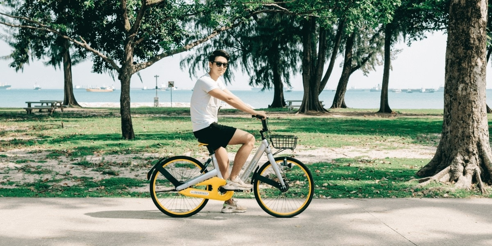
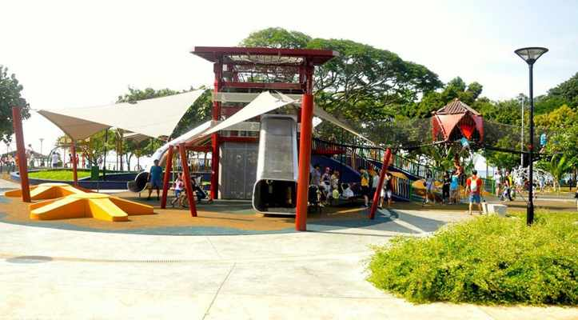
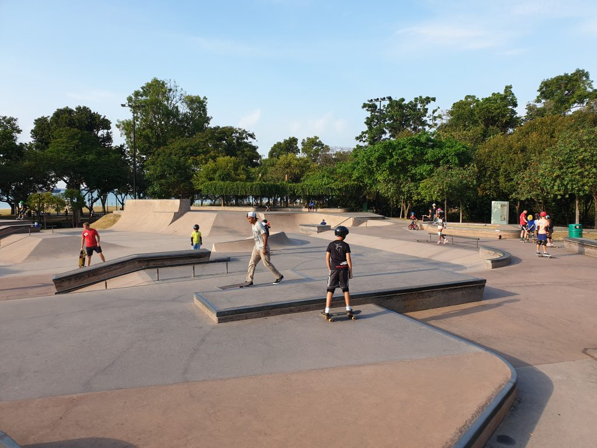
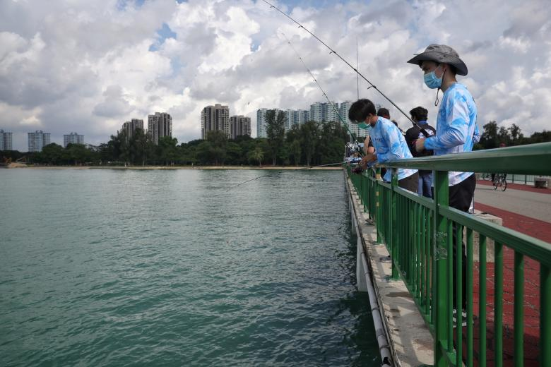

6 Things To Do At ECP
1. Cycling
One of the fun things to do at East Coast Park is to cycle! Feel the wind against your skin as you traverse the park terrains.
Bring your bike or rent one from a kiosk or a bike-sharing company.
2. Play at Marine Cove Children Playground
One of the things to do at East Coast Park is to let the little ones explore the outdoors! Interact with large play areas suitable
for children age two to 12 years old! This family-friendly spot is going to keep you and your kids engaged all day long.
3. Visit the Xtreme Skate Park
That’s Xtreme Skatepark, where extreme sports enthusiasts go to practice and showcase their skills.
As the largest skatepark on our little red dot, it’s home to many unique features for both novice and advanced skaters, such as
a combo bowl and a whopping 3.6M deep vertical bowl.
Whether you’re a pro skater or someone taking your first step into the world of extreme sports, Xtreme Skatepark offers some of
the best obstacles for you to master. And even if you don’t skate, the skatepark is still a great spot to just hang out and watch the pros do their thing.
4. Water Ski Park

Singapore Wake Park is the country’s only cable -ski park built in a lagoon at Singapore East Coast Park. It ensures a safe environment
for both beginners and experienced riders looking for an adrenaline fix.
Promising all level of fun and challenges, the park features three cable-systems. One full size- cable system for the experienced riders
and two straight-line System 2.0 for the complete novice and intermediate riders from as young as six years old.
5. Barbecueing

There are a total of 80 BBQ pits in 6 different areas in ECP. They are Area B, C, D, E, F and G.
Have a cook-out session with a small group of friends or even a large family gathering at ECP!
Click here to book and find out more
6. Fishing
 On any given day, you will find plenty of anglers perfecting their craft along the 300-metre-long Bedok Jetty. Even if you aren’t into fishing,
Bedok Jetty is a nice place to stroll out to and enjoy the view and sea breeze.